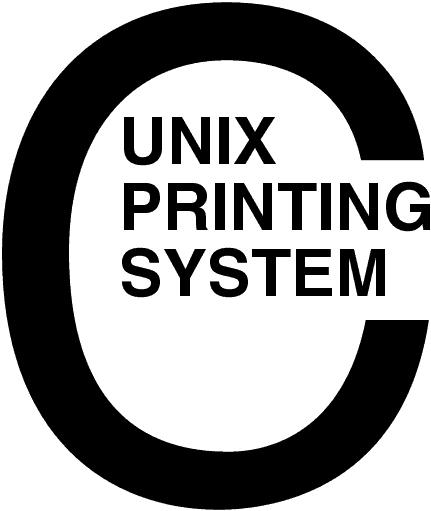

CUPS Software Security Report
CUPS-SSR-1.1
Easy Software
Products
Copyright 1997-2003, All Rights Reserved
1 Scope
- 1.1 Identification
- 1.2 System Overview
- 1.3 Document Overview
2 References
- 2.1 CUPS Documentation
- 2.2 Other Documents
3 Local Access
Risks
4 Remote Access
Risks
- 4.1 Denial of Service
Attacks
- 4.2 Security Breaches
A Glossary
This software security report provides an analysis of possible security
concerns for the Common UNIX Printing System ("CUPS") Version 1.1.
CUPS provides a portable printing layer for UNIX®-based operating systems. It
has been developed by Easy Software
Products to promote a standard printing solution for all UNIX vendors and
users. CUPS provides the System V and Berkeley command-line interfaces.
CUPS uses the Internet Printing Protocol ("IPP") as the basis for managing
print jobs and queues. The Line Printer Daemon ("LPD") Server Message Block
("SMB"), and AppSocket (a.k.a. JetDirect) protocols are also supported with
reduced functionality. CUPS adds network printer browsing and PostScript Printer
Description ("PPD") based printing options to support real-world printing under
UNIX.
CUPS includes an image file RIP that supports printing of image files to
non-PostScript printers. A customized version of GNU Ghostscript 7.05 for CUPS
called ESP Ghostscript is available separately to support printing of PostScript
files within the CUPS driver framework. Sample drivers for Dymo, EPSON, HP, and
OKIDATA printers are included that use these filters.
Drivers for thousands of printers are provided with our ESP Print Pro
software, available at:
http://www.easysw.com/printpro/
CUPS is licensed under the GNU General Public License and GNU Library General
Public License. Please contact Easy Software Products for commercial support and
"binary distribution" rights.
This software security report is organized into the following sections:
- 1 - Scope
- 2 - References
- 3 - Local Access Risks
- 4 - Remote Access Risks
- A - Glossary
The following CUPS documentation is referenced by this document:
- CUPS-CMP-1.1: CUPS Configuration Management Plan
- CUPS-IDD-1.1: CUPS System Interface Design Description
- CUPS-IPP-1.1: CUPS Implementation of IPP
- CUPS-SAM-1.1.x: CUPS Software Administrators Manual
- CUPS-SDD-1.1: CUPS Software Design Description
- CUPS-SPM-1.1.x: CUPS Software Programming Manual
- CUPS-SSR-1.1: CUPS Software Security Report
- CUPS-STP-1.1: CUPS Software Test Plan
- CUPS-SUM-1.1.x: CUPS Software Users Manual
- CUPS-SVD-1.1: CUPS Software Version Description
The following non-CUPS documents are referenced by this document:
- Adobe
PostScript Printer Description File Format Specification, Version 4.3.
- Adobe
PostScript Language Reference, Third Edition.
- IPP/1.1: Implementers Guide
- RFC 1179, Line Printer
Daemon Protocol
- RFC 2396, Uniform Resource
Identifiers (URI): Generic Syntax
- RFC 2567, Design Goals for
an Internet Printing Protocol
- RFC 2568, Rationale for the
Structure of the Model and Protocol for the Internet Printing Protocol
- RFC 2569, Mapping between
LPD and IPP Protocols
- RFC 2616, Hypertext Transfer
Protocol -- HTTP/1.1
- RFC 2617, HTTP
Authentication: Basic and Digest Access Authentication
- RFC 2910, IPP/1.1: Encoding
and Transport
- RFC 2911, IPP/1.1: Model and
Semantics
- RFC 3380, IPP: Job and
Printer Set Operations
Local access risks are those that can be exploited only with a local user
account. This section does not address issues related to dissemination of the
root password or other security issues associated with the UNIX operating
system.
There is one known security vulnerability with local access:
- Device URIs are passed to backend filters in argv[0] and in an environment
variable. Since device URIs can contain usernames and passwords it may be
possible for a local user to gain access to a remote resource.
We recommend that any password-protected accounts used for remote printing
have limited access priviledges so that the possible damages can be
minimized.
The device URI is "sanitized" (the username and password are removed) when
sent to an IPP client so that a remote user cannot exploit this
vulnerability.
Remote access risks are those that can be exploited without a local user
account and/or from a remote system. This section does not address issues
related to network or firewall security.
Like all Internet services, the CUPS server is vulnerable to denial of
service attacks, including:
- Establishing multiple connections to the server until the server will
accept no more.
Starting with CUPS 1.1.18, the MaxClientsPerHost provides
limited protection against DoS attacks, however it is not effective against
large-scale distributed attacks.
- Repeatedly opening and closing connections to the server as fast as
possible.
There is no easy way of protecting against this in the CUPS software. If
the attack is coming from outside the local network it might be possible to
filter such an attack, however once the connection request has been received
by the server it must at least accept the connection to find out who is
connecting.
- Flooding the network with broadcast packets on port 631.
It might be possible to disable browsing if this condition is detected by
the CUPS software, however if there are large numbers of printers available on
the network such an algorithm might think that an attack was occurring when
instead a valid update was being received.
- Sending partial IPP requests; specifically, sending part of an attribute
value and then stopping transmission.
The current code is structured to read and write the IPP request data
on-the-fly, so there is no easy way to protect against this for large
attribute values.
- Sending large/long print jobs to printers, preventing other users from
printing.
There are limited facilities for protecting against large print jobs (the
MaxRequestSize attribute), however this will not protect printers
from malicious users and print files that generate hundreds or thousands of
pages. In general, we recommend restricting printer access to known hosts or
networks, and adding user-level access control as needed for expensive
printers.
The current CUPS server supports Basic, Digest, and local certificate
authentication:
- Basic authentication essentially places the clear text of the username and
password on the network. Since CUPS uses the UNIX username and password
account information, the authentication information could be used to gain
access to accounts (possibly priviledged accounts) on the server.
- Digest authentication uses an MD5 checksum of the username, password, and
domain ("CUPS"), so the original username and password is not sent over the
network. However, the current implementation does not authenticate the entire
message and uses the client's IP address for the nonce value, making it
possible to launch "man in the middle" and replay attacks from the same
client. The next minor release of CUPS will support Digest authentication of
the entire message body, effectively stopping these methods of attack.
- Local certificate authentication passes 128-bit "certificates" that
identify an authenticated user. Certificates are created on-the-fly from
random data and stored in files under
/etc/cups/certs . They have
restricted read permissions: root + system for the root certificate, and lp +
system for CGI certificates. Because certificates are only available on the
local system, the CUPS server does not accept local authentication unless the
client is connected to the localhost address (127.0.0.1.)
The default CUPS configuration disables remote administration. We do not
recommend that remote administration be enabled for all hosts. However, if you
have a trusted network or subnet, access can be restricted accordingly. Also, we
highly recommend using Digest authentication when possible. Unfortunately, most
web browsers do not support Digest authentication at this time.
- C
- A computer language.
- parallel
- Sending or receiving data more than 1 bit at a time.
- pipe
- A one-way communications channel between two programs.
- serial
- Sending or receiving data 1 bit at a time.
- socket
- A two-way network communications channel.
- ASCII
- American Standard Code for Information Interchange
- CUPS
- Common UNIX Printing System
- ESC/P
- EPSON Standard Code for Printers
- FTP
- File Transfer Protocol
- HP-GL
- Hewlett-Packard Graphics Language
- HP-PCL
- Hewlett-Packard Page Control Language
- HP-PJL
- Hewlett-Packard Printer Job Language
- IETF
- Internet Engineering Task Force
- IPP
- Internet Printing Protocol
- ISO
- International Standards Organization
- LPD
- Line Printer Daemon
- MIME
- Multimedia Internet Mail Exchange
- PPD
- PostScript Printer Description
- SMB
- Server Message Block
- TFTP
- Trivial File Transfer Protocol